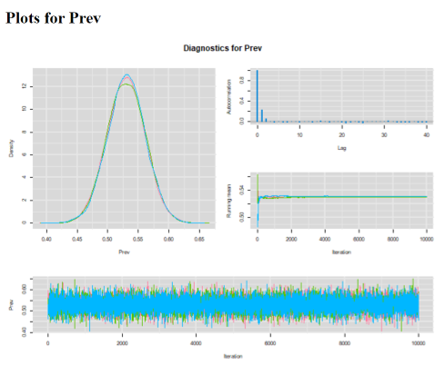
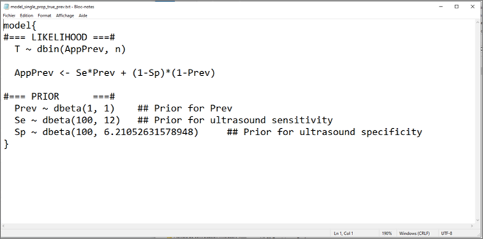

Chapter 4 Exercise 1 - Proportions
4.1 Data
The data used for the following exercises came from a study aiming at estimating diagnostic accuracy of a milk pregnancy associated glycoprotein (PAG) ELISA and transrectal ultrasonographic (US) exam when used for determining pregnancy status of individual dairy cows 28 to 45 days post-insemination. In that study, the new test under investigation was the PAG test and US was used for comparison, but was considered as an imperfect test.
In the original study, data from 519 cows from 18 commercial dairy herds were used. For the following exercises, the dataset was modified so that we have data from 519 cows from 3 herds (i.e., the data from 16 herds were collapsed together so they appear to be from one large herd). Note that there are some cows with missing values for one of the tests, so we will not always work with 519 cows. The complete original publication can be found here: Dufour et al., 2017.
The dataset Preg.xlsx contains the results from the study. However, for the exercises we will always simply use the cross-tabulated data and these will be already organized for you and presented at the beginning of each exercise. The dataset is still provided so you can further explore additional comparisons. The list of variables in the Preg.xlsx dataset are described in the table below.
Table. List of variables in the Preg.xlsx dataset.
| Variable | Description | Range |
|---|---|---|
| Obs | An observation unique ID number | 1 to 519 |
| Herd | Herd ID number | 1 to 3 |
| Cow | Cow ID number | NA |
| T1_DOP | Number of days since insemination at testing | 28 to 45 |
| PAG_DX | Results from the PAG test | 0 (not pregnant); 1 (pregnant) |
| US_DX | Results from the ultrasound test | 0 (not pregnant); 1 (pregnant) |
| TRE_DX | Results from the transrectal exam (TRE) test | 0 (not pregnant); 1 (pregnant) |
4.2 Questions
We will use data from one population (herd #1). In this herd, we had the following proportion of apparently pregnant cows (based on the US exam).
139 US+/262 exams
Open up the R project for Exercise 1 (i.e., the R project file named Exercise 1.Rproj).
In the Exercise 1 folder, you will find partially completed R scripts. To answer the questions, try to complete the missing parts (they are highlighted by a #TO COMPLETE# comment). We also provided complete R scripts, but try to work it out on your own first!
1. Start from the partially completed Question 1.R script located in Exercise 1 folder. What would be the proportion of pregnant cows? Use a Bayesian approach to compute that proportion and a credible interval (CI). For this first computation, assume that we have no prior knowledge on the expected proportion of pregnant cows in a Canadian herd. Run three Markov chains with different sets of initial values. Look at the trace plot. Do you think convergence was achieved? Do you need a longer burn-in period? Are all 3 chains converging in the same space? Compute the effective sample size (ESS), do you feel that number of iterations was sufficient to describe the posterior distribution with enough precision? What about auto-correlation of the Markov chains, any issues there?
2. If we were to compute a Frequentist estimate with 95% CI, would it differ a lot from our Bayesian estimates? Why? As a refresher, the formula for a Frequentist 95%CI for a proportion is below (where P is the actual observed proportion and n is the denominator for that proportion):
\(95CI=P \pm 1.96* \sqrt{\frac{P*(1-P)}{n}}\)
3. Start from the partially completed Question 3.R script located in Exercise 1 folder. We just found that Romano et al. (2006) reported, for a US exam conducted between 28-45 days post-insemination:
-Sensitivity (Se) = 0.90 (95CI: 0.85, 0.95)
-Specificity (Sp) = 0.95 (95CI: 0.90, 0.97)
We now realized that, since a US exam is not a gold-standard test, in the previous exercises we rather computed an apparent prevalence (AP), not the true prevalence (P). From the literature, we know that these two parameters are linked as follow:
\(AP= Se*P + (1-Sp)*(1-P)\)
Knowing that we had the following proportion of apparently pregnant cows (based on the US exam).
139 US+/262 exams
And assuming, again, that we have no prior knowledge on the expected proportion of pregnant cows in a Canadian herd.
Can you think of a way to estimate the true prevalence, rather than the apparent prevalence, using that formulae?
4. Start from the R script that you completed in Question 1. In the literature, we saw a recent study conducted on 30 Canadian herds and reporting an expected pregnancy prevalence of 42% with 97.5% percentile of 74%. What kind of distribution could we use to represent this information? Use these information as a pregnancy prevalence prior distribution to compute an apparent prevalence. Are your results very different from those of Question 1?
5. Start from the partially completed Question 5.R script located in Exercise 1 folder. When comparing PAG to US results in herd #1, we got the following 2x2 table.
Table. Cross-classified results of the PAG and US tests in herd #1.
| US+ | US- | Total | |
|---|---|---|---|
| PAG+ | 138 | 10 | 148 |
| PAG- | 1 | 113 | 114 |
| Total | 139 | 123 | 262 |
Assuming that US is a gold-standard test could we compute PAG sensitivity (Se) and specificity (Sp)? Use vague priors for PAG Se and Sp since it is the first ever study on this topic (i.e., we do not have any prior knowledge on these unknown parameters).
4.3 Answers
1. What would be the proportion of pregnant cows? Use a Bayesian approach to compute that proportion and a Bayesian credible interval (BCI). For this first computation, assume that we have no prior knowledge on the expected proportion of pregnant cows in a Canadian herd. Run three Markov chains with different sets of initial values. Look at the trace plot. Do you think convergence was achieved? Do you need a longer burn-in period? Are all 3 chains converging in the same space? Compute the effective sample size (ESS), do you feel that number of iterations was sufficient to describe the posterior distribution with enough precision? What about auto-correlation of the Markov chains, any issues there?
Answer: I chose to run a model with 3 chains of 10,000 iterations each (11,000 iterations minus a burn-in of 1,000). I have obtained the following diagnostic plots:

Convergence of the 3 chains was achieved, all three chains appear to be moving in the same space (see trace plot). The 1,000 iterations burn-in period is probably more than needed for this very simple problem. Autocorrelation plot is just perfect with correlation declining very rapidly close to zero at lag of 1! The effective sample size for the Prev parameter is >18,000 values. So, plenty of precision to report the median and 2.5th and 97.5th percentiles.
The median pregnancy prevalence estimate (95% CI) was 53.0% (46.9, 59.0).
2. If we were to compute a Frequentist estimate with 95% CI, would it differ a lot from our Bayesian estimates? Why?
Answer: It should not differ much from the Bayesian median estimate and 95CI because these latter estimates were generated using vague priors. In such cases, Bayesian and Frequentist estimates should be quite similar. Actually, if we use the Frequentist formula for computing 95CI and the observed data (i.e., 139/262) we get:
\(P = 139/262 = 0.531\)
\(95CI=0.531 \pm 1.96* \sqrt{\frac{0.531*(1-0.531)}{262}} = 0.531 \pm 0.060\)
Thus, we have a Frequentist estimated proportion of 53.1% with a Frequentist 95 CI of 47.1 to 59.1 (virtually unchanged compared to the Bayesian estimates).
3. Can we think of a way to estimate the true prevalence, rather than the apparent prevalence, using that formulae?
Answer: That was a tricky question don’t we think? Below is the model we used for that:

It may a bit disturbing at first sight, but we did not try to isolate the true prevalence (Prev) to the left side of the equation relating the apparent (AppPrev) and true prevalence (Prev). This is because Bayesian models are not necessarily read from left to right, but rather as a big “spaghetti bowl”. In short, there is no need for a left to right form of mathematical writing. As long as we explain how the two parameters AppPrev and Prev are linked, the model will make sense of this.
Then, you may also have noticed that we provided prior distributions for Prev, an unknown parameter, and also for US sensitivity and specificity (Se and Sp). But we did not specify any prior distribution for the apparent prevalence (AppPrev). Indeed, AppPrev is also an unknown parameter, but it was directly defined by the equation linking the true (Prev) and apparent prevalence (AppPrev). Therefore, there is no need for specifying a prior distribution for AppPrev.
Using this model, we were able to estimate that the median (95% BCI) true prevalence was 56.7% (48.4, 65.4). As a comparison, the median (95% BCI) apparent prevalence was estimated at 53.1% (47.1, 59.1). You may have noted that the width of the 95% BCI for the true prevalence (17.0 percentage-points) is larger than that of the apparent prevalence (12 percentage-points). It is because we combined the uncertainty regarding the prevalence with the uncertainty regarding ultrasound sensitivity and specificity, when computing the true prevalence. For computing the apparent prevalence, we only considered the uncertainty regarding this latter proportion.
4. In the literature, we saw a recent study conducted on 30 Canadian herds and reporting an expected pregnancy prevalence of 42% with 97.5% percentile of 74%. What kind of distribution could we use to represent this information? Use these information as a pregnancy prevalence prior distribution to compute an apparent prevalence. Are our results very different from those of Question 1?
Answer: A beta(4.2, 5.4) distribution would have a mode of 0.42 and a 97.5th percentile of 0.74. Using this information as prior, I get a prevalence of pregnancy of 52.7% (95 CI: 46.8, 58.6). Actually, we observe very little difference between the models using vague vs. informative priors. This is because this informative prior contains only the equivalent of 10 observations \((4.2+5.4)\). In the dataset, there are 262 cows. Therefore, the estimation process is still mainly driven by our dataset.
5. Assuming that US is a gold-standard test could you compute PAG sensitivity (Se) and specificity (Sp)? Use vague priors for PAG Se and Sp since it is the first ever study on this topic (i.e., we do not have any prior knowledge on these unknown parameters).
Answer: The sensitivity and specificity are simple proportions. Sensitivity is simply the number of test positive among the number of truly diseased individuals. We have data for these in the 2x2 table. If we assume that US is a gold-standard test, then the number of truly diseased cows is 139. Of them, 138 tested positive to the PAG test. Similarly, the specificity is simply the number of test negative among the number of truly healthy individuals. From the 2x2 table, the number of true negative cows was 123 and 113 of them tested negative to the PAG test. The likelihood functions (one for each parameter in this case) linking the unknown parameters (Se and Sp) to these observed data would be:
\(Test+ \sim dbin(Se, True+)\)
\(Test- \sim dbin(Sp, True-)\)
Using vague beta(1, 1) priors on the Se and Sp, I got an estimated Se of 98.8% (95 CI: 96.1, 99.8) and a Sp of 91.5% (95CI: 85.9, 95.5). But be cautious with these numbers. We know very well that an US exam is not a perfect diagnostic test for pregnancy in dairy cows. With the current approach, we are attributing all disagreements between tests to a failure of the PAG test… But it could be the US test that was wrong in many instances. Moreover, animals for which the two tests agreed could still be misdiagnosed as pregnant or open, but by both tests (i.e., a failure of the PAG AND the US tests). We wil see in the next sections of the course how to account for the fact that neither of the tests are gold-standards.